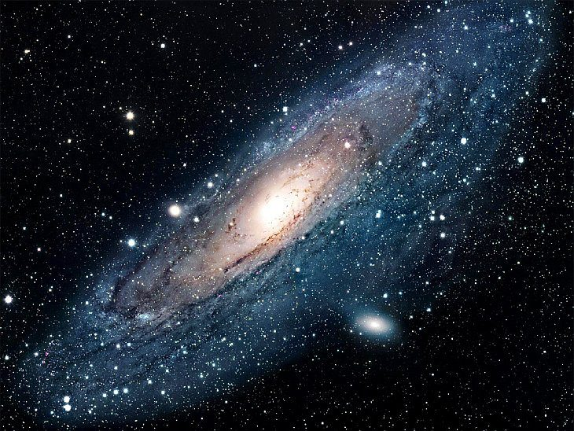

Мій головний заголовок
Мій заголовок верхнього рівня
Мій підзаголовок
Мій під-підзаголовок
Мій під-під-підзаголовок
Мій під-під-під-підзаголовок
це одиночний абзац
ще один одиночний абзац
Елемент <b> є частиною тексту, що стилістично відрізняється від нормального тексту та не носить якогось спеціального значення або важливості, і як правило виділено жирним шрифтом.
Елемент <em> призначений для слів, які мають підкреслений акцент в порівнянні з іншим текстом, який часто обмежується словом або словами речення і впливає на зміст самого речення. Зазвичай цей елемент відображається курсивом.
Елемент <mark> представляє текст, виділений в довідкових цілях через свою актуальність в певному контексті. Наприклад, він може бути використаний на сторінці з результатом пошуку, в якій виділяється кожен екземпляр шуканого слова.
Елемент <strong> підкреслює важливість, серйозність або терміновість свого вмісту, також може бути використаний для позначення попередження або застереження. Як правило виділено жирним шрифтом.
- ненумерований список
- цей теж ненумерований
- і цей
- нумерований список
- наступний пункт
- далі теж нумерований